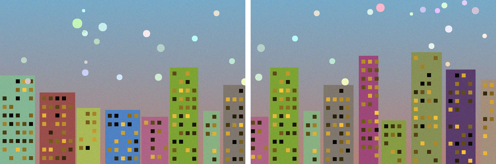
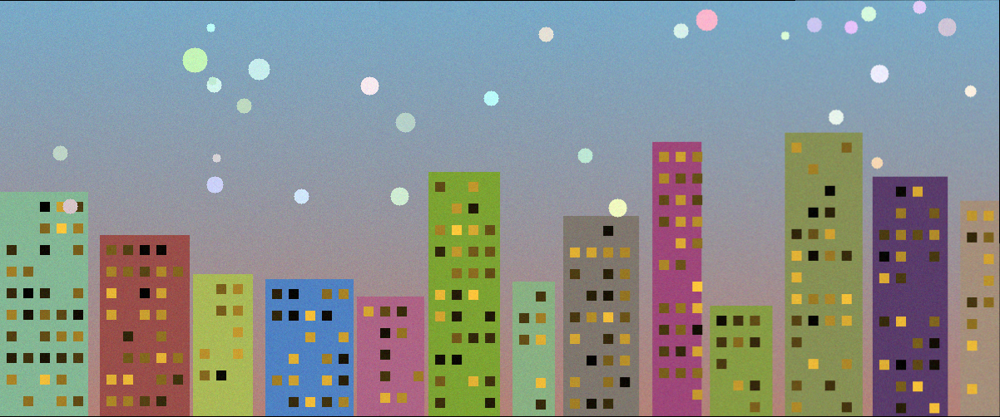

From-Scratch Build · Computer Vision
Take overlapping snapshots of a skyline and the stitcher fuses them into one wide, seamless panorama — no visible seam, no double edges. The homography math (normalized DLT via SVD) and RANSAC are written from scratch in NumPy; OpenCV supplies ORB features and fast warping, with a pure-NumPy fallback when it's unavailable. It's a working command-line tool, not a description of one.
What it is
Stitching looks like image editing but is really geometry. Two photos of the same scene from a slightly turned camera are related by a single mathematical transform — a homography. Find that transform and you can warp one image into the other's frame so they line up exactly. Do it across a sequence and the whole panorama snaps together.
The catch is that the matches you find between images are noisy — plenty of them are wrong. The art of the pipeline is fitting the right transform despite the bad matches, and then blending the overlap so the join disappears. It's a tour of the fundamentals every vision course is built on.
The demo
The bundled demo splits a 1200×500 textured skyline into two overlapping 744×500 crops, then stitches them back together. ORB finds matches, RANSAC fits the homography that the most matches agree on, and the overlap is feather-blended away.


pip install -r requirements.txt
python stitch.py # bundled demo → output.png
python stitch.py a.jpg b.jpg c.jpg -o pano.png # your own photos
python -m pytest -q # 11 passing testsNumbers above are from a real run on the OpenCV ORB backend. The reconstructed panorama lands within 2 px of the original scene the crops were cut from.
The stack
Each stage is a classic vision building block, implemented to actually understand it.
Find distinctive corners and blobs in each image — the anchor points stitching depends on.
Encode the patch around each keypoint so the same point can be recognised across images.
Pair up keypoints that describe the same physical point in two overlapping photos.
Estimate the homography from the matches while ruthlessly rejecting the wrong ones.
Transform each image into a common frame so overlapping regions align pixel for pixel.
Feather the overlap so exposure and edges merge invisibly into one continuous image.
Architecture
The code lives in a small panorama/ package plus stitch.py. Each new photo is folded in by the same sequence:
features.pyORB keypoints + Hamming brute-force + Lowe ratio test (OpenCV), or Harris corners + NCC patch matching (NumPy fallback).
homography.pyNormalized Direct Linear Transform: build the 2n×9 system, solve by SVD, Hartley-normalize for conditioning. From scratch in NumPy.
ransac.pyRANSAC over minimal 4-point samples, inliers counted by reprojection error, adaptive iteration count, refit on all inliers. From scratch.
blend.pyCompute the canvas bounding box and reproject each image into a shared frame (OpenCV warpPerspective or NumPy bilinear inverse-map).
blend.pyDistance-transform feather weights merge the overlap so the seam disappears, then on to the next photo.
Reflection